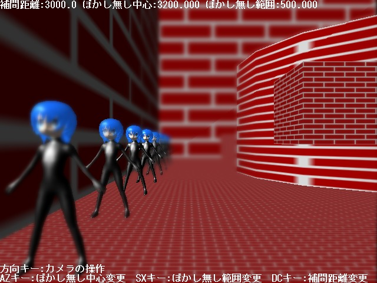
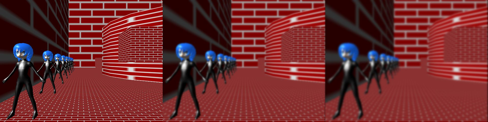
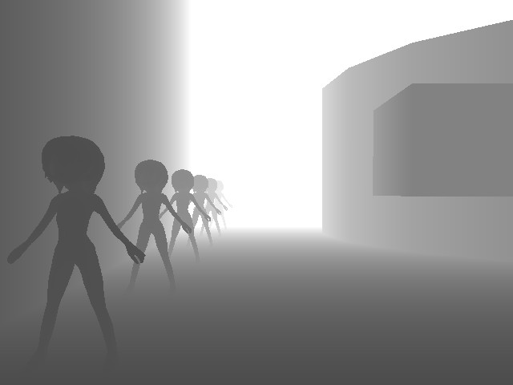

サンプルプログラム 被写界深度基本 ( 要プログラマブルシェーダー２．０ )

プログラマブルシェーダーを使用して被写界深度( カメラの焦点を合わせていない部分がぼやける現象を再現したもの )をするサンプルプログラムです。
手順としては、まず３Ｄ画面を普通に描画したテクスチャ、普通に描画したシーンをガウスフィルタで暈したテクスチャ、それを更に暈したテクスチャの３つを用意します。( 下記イメージ )
これには特別なシェーダーは使いません。( ガウスフィルタで暈すのも GraphFilter でできるため )

あと深度値を色に変換したテクスチャも用意します。
こちらは深度値を色に変換して描画するシェーダーを使用します。

この４つの画像を使用して、深度値テクスチャから得られる深度値とカメラの焦点のパラメータから暈し率を算出して、
そのパラメータから暈してない画像、暈している画像２枚を合成して「焦点の合っていない部分が暈けている画像」を描画します。( 一番上のイメージ )
プログラムの実行に必要なファイルのセットはこちらにあります。
Ｃ＋＋のプログラム
深度値描画を行う剛体メッシュ用頂点シェーダープログラム
深度値描画を行うスキニングメッシュ用頂点シェーダープログラム
深度値記録用ピクセルシェーダーのプログラム
深度値や暈し画像を使用して被写界深度処理を行うピクセルシェーダープログラム
戻る